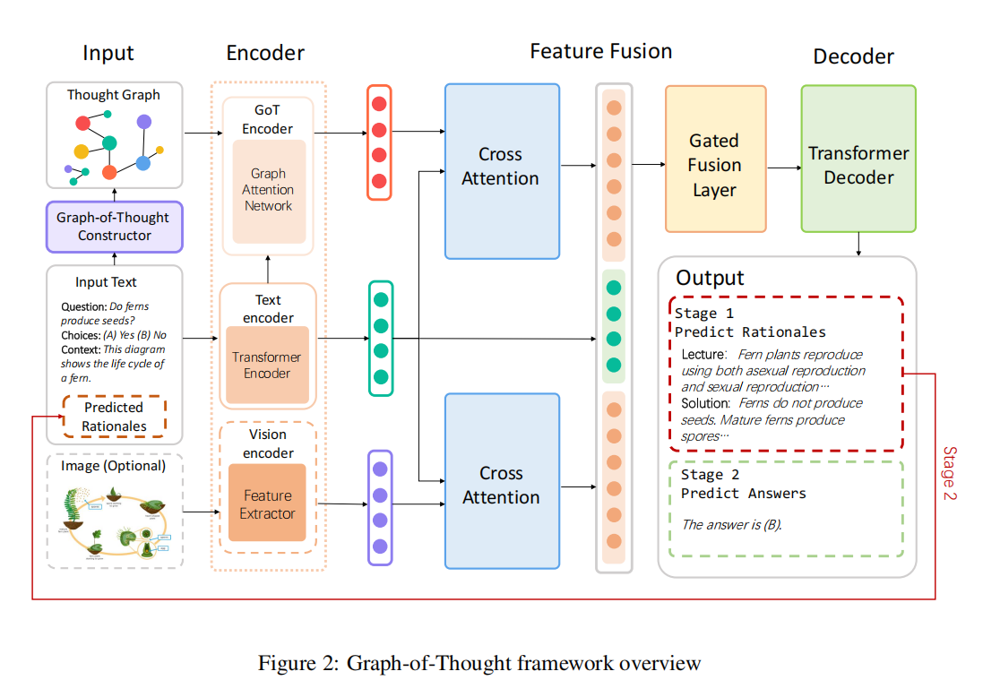
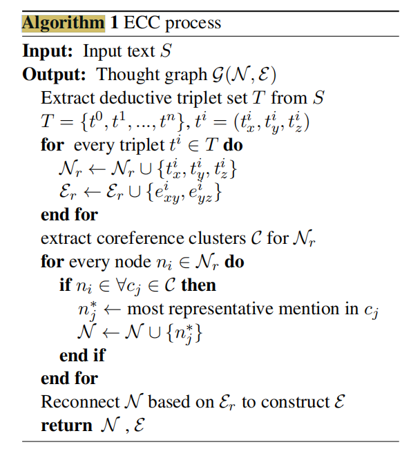

GoT: Effective Graph-of-Thought Reasoning in Language Models¶
GoT: Effective Graph-of-Thought Reasoning in Language Models
Warning
1 Introduction¶
这篇论文提出了一种名为 思维图(Graph-of-Thought, GoT) 的新型推理框架，旨在提升语言模型在复杂推理任务中的表现。该框架的核心思想是：人类的思维过程并非如当前的 思维链(Chain-of-Thought, CoT) 方法所假设的那样，是一个简单的线性步骤序列，而是更加复杂和非线性的，包含跳跃、联想和并行处理。
为了更精确地模拟人类的思维模式，思维图(GoT) 将思维单元表示为图中的节点，节点之间的连接表示为边，从而构建出一个图结构。这种图结构能够捕捉人类思维的非连续性，从而实现更灵活和更接近人类的推理过程。
思维图(GoT) 采用一个两阶段推理框架，具体如下：
- Rationale Generation (理由/依据生成): 首先，模型生成解决问题的中间推理步骤或理由。这一步类似于 思维链(CoT)，但 思维图(GoT) 的关键在于它并非简单地生成一个线性链，而是生成构成图结构的各个节点。
- Answer Inference (答案推断): 然后，模型基于生成的理由图来推断最终答案。
为了实现上述框架，该论文引入了一个额外的 思维图编码器(GoT Encoder)。这个编码器的作用是学习 思维图(GoT) 的表示，并将其与原始输入表示相融合。具体的融合机制是门控融合(Gated Fusion)：
- 思维图编码器(GoT Encoder): 该编码器很可能基于 图神经网络(Graph Neural Network, GNN)，例如 图注意力网络(Graph Attention Network, GAT)。 文中提到使用了图注意力网络来编码 GoT。 图注意力网络(GAT) 能够学习图中每个节点的重要性，并根据其邻居节点的信息来更新节点的表示。
- 门控融合(Gated Fusion): 门控机制允许模型自适应地控制来自 思维图(GoT) 表示和原始输入表示的信息流。 这种机制可以有效地平衡两种表示的贡献，从而提高模型的推理能力。
在构建 思维图(GoT) 的过程中，论文提出了一种 提取-聚类-共指(Extract-Cluster-Coreference, ECC) 方法，用于模拟人类推理中的演绎过程。
该论文使用了 T5 (Text-to-Text Transfer Transformer) 预训练语言模型作为其骨干模型 (Backbone Model)。T5 模型以其强大的文本生成能力而闻名，非常适合用于生成推理步骤和最终答案。论文中使用了 FLAN-Alpaca (T5)-base 和 FLAN-Alpaca (T5)-large 作为骨干模型进行了实验。
为了评估 思维图(GoT) 的性能，研究者在以下两个数据集上进行了实验：
- AQUA-RAT: 一个纯文本推理数据集.
- ScienceQA: 一个多模态推理数据集，包含文本和视觉信息。
实验结果:
> GoT demonstrates exceptional performance on both text only AQUA-RAT (Ling et al., 2017) and multimodal ScienceQA (Lu et al., 2022) benchmarks,surpassing the accuracy of online system ChatGPT (OpenAI, 2023) by 9.28%, strong baseline Multimodal-CoT (Zhang et al., 2023) by 2.40%, and even exceeding human performance, establishing a new state-of-the-art on ScienceQA test set with far fewer parameters.
主要创新点：
- 提出了 思维图(GoT) 框架，将人类的思维过程建模成图结构，而非简单的链式结构。
- 设计了一个基于 图注意力网络(GAT) 的 思维图编码器(GoT Encoder)，用于学习图的表示。
- 采用门控融合(Gated Fusion) 机制，将图的表示与原始输入表示相融合。
- 提出了 提取-聚类-共指(ECC) 方法，用于构建 思维图(GoT)。
- 在文本和多模态推理任务上都取得了显著的性能提升，证明了 思维图(GoT) 的优越性。
2 Graph-of-Thought¶
整体架构  思维图(GoT) 遵循一个两阶段的框架，灵感来源于 Multimodal-CoT。
- 理由生成阶段 (Rationale Generation Stage):
- 模型接受输入文本（包括问题、上下文和选项）、视觉特征（如果存在）以及生成的思维图(GoT)。
- 多模态处理: 对于多模态任务，论文采用一种常见的策略，即使用独立的编码器来处理来自不同模态的输入数据。
- 文本编码器 (Text Encoder): 使用 Transformer 编码器对输入文本进行编码。
- 视觉编码器 (Vision Encoder): 使用视觉编码器对图像进行编码。
- 图编码器 (Graph Encoder): 使用 图注意力网络(Graph Attention Network, GAT) 对 思维图(GoT) 进行编码。
- 跨注意力 (Cross-Attention): 编码后的文本特征、视觉特征和图特征会被传递到跨注意力层，用于将文本 tokens 与图像 patches 和图节点对齐。 跨注意力机制 允许模型学习不同模态之间的关联性。例如，模型可以学习到某个文本 token 对应于图像中的某个特定区域，或者对应于图中的某个特定节点。
- 门控融合层 (Gated Fusion Layer): 使用门控融合层进一步融合这三种特征。
- Transformer 解码器 (Transformer Decoder): 融合后的特征被传递到 Transformer 解码器，以预测目标理由 (rationales)。
- 答案生成阶段 (Answer Generation Stage):
- 该阶段与理由生成阶段类似，主要区别在于输入文本会与第一阶段预测的理由连接在一起。
- 模型使用与第一阶段相同的编码器和解码器结构来生成最终答案。
需要注意的是，上述描述的是一个通用的多模态推理框架。对于纯文本推理任务，不需要图像特征，因此可以省略图像编码和视觉特征融合的过程。
2.1 GoT 构建 (GoT Construction)¶
思维图(GoT) 的构建旨在模拟人类的演绎推理能力，从而捕捉人类思维的跳跃性。
-
基本思想: 利用演绎推理的基本原则。例如，如果存在 "x -> y" 和 "y -> z" 这两个关系，那么可以推断出 "x -> z" 这个关系。论文中使用 提取-聚类-共指(Extract-Clustering-Coreference, ECC) 过程来构建 思维图(GoT)。
-
提取-聚类-共指(Extract-Clustering-Coreference, ECC) 过程：
-
提取 (Extract): 首先，提取-聚类-共指(ECC) 过程提取演绎三元组 \(T = \{t_i = (t_i^x, t_i^y, t_i^z)\}\) 作为离散的原始图。
- \(t_i^x\), \(t_i^y\), 和 \(t_i^z\) 是第 i 个三元组的思维单元。
- 存在边 \(e_{xy}^i\) 连接 \(t_i^x\) 和 \(t_i^y\)，以及边 \(e_{yz}^i\) 连接 \(t_i^y\) 和 \(t_i^z\)。
- 实现方法: 论文使用 开放信息抽取(Open Information Extraction, OpenIE) 系统（例如，Angeli et al., 2015）来提取 主语-谓语-宾语 (subject-verb-object) 三元组作为思维单元节点。
-
聚类 (Clustering): 然后，提取-聚类-共指(ECC) 过程对指向相同提及 (mentions) 的节点进行聚类，以进行共指消解。 共指消解 旨在识别文本中指向同一实体的不同提及。例如，“the company” 和 “it” 可能指向同一家公司。
-
共指 (Coreference): 具体来说，模型将每个属于共指簇 (coreference cluster) 的图节点替换为该簇中最具代表性的提及。 代表性提及 可以是簇中最常出现的提及，或者是最早出现的提及。
-
-
算法 1 (Algorithm 1): 提取-聚类-共指(ECC) 过程。 
-
GoT 构建中的输入:
- 理由生成阶段: 输入文本由问题、上下文和选项连接而成。
- 多模态GoT: 图像描述 (image caption) 会被添加到输入文本中，以便 思维图(GoT) 能够整合图像信息。
- 答案推断阶段: 在理由生成阶段预测的理由会进一步与输入文本连接，用于构建相应的 思维图(GoT)。
-
Stanford CoreNLP: 论文使用 Stanford CoreNLP 系统 (Manning et al., 2014) 来进行共指消解。
-
图的表示: 构建的 思维图(GoT) 表示为 \(G(N, E)\)。
- \(N\) 代表由 开放信息抽取(OpenIE) 提取的节点。
- \(E\) 代表邻接矩阵 (adjacency matrix)。邻接矩阵的行和列对应于图中的节点。如果两个节点之间存在边，则对应的矩阵元素为 1；否则，为 0。
2.2 GoT 编码和整合 (GoT Encoding and Integration)¶
思维图(GoT) 推理利用独立的编码器来编码每种模态的输入数据。图注意力网络(GAT) 用于编码思维图，Transformer 编码器用于编码输入文本。在多模态 思维图(GoT) 推理中，还会使用一个额外的视觉编码器来编码图像。
Danger
先码住，好多公式，有时间再看，先填周报了呜呜
2.2.1 基础编码器 (Base Encoder)¶
-
文本编码器 (Text Encoder): 对于文本表示，使用 Transformer 编码器（例如，T5）来编码输入文本。
- 给定输入句子 \(S = \{w_0, ..., w_l\}\)，从 Transformer 编码器的最后一层提取隐藏状态，以获得文本表示 \(H_T\)： $$ H_T = {h_0, h_1, ..., h_l} = Encoder_{text}(S) \quad (1) $$
- 其中，\(h_i\) 是 token \(i\) 的隐藏表示，\(l\) 表示文本输入的长度。
-
视觉编码器 (Vision Encoder) (可选): 对于具有视觉模态的多模态推理，遵循 (Zhang et al., 2023)，使用现成的视觉提取模型作为视觉编码器 \(Encoder_{vision}\) 来提取图像 \(I\) 的 patch-level 特征，然后使用一个可训练的投影矩阵 \(W_I\) 将提取的特征投影到视觉表示 \(H_I\)，使其与 \(H_T\) 具有相同的形状。 $$ H_I = W_I Encoder_{vision}(I) \quad (2) $$
2.2.2 GoT 编码器 (GoT Encoder)¶
-
节点嵌入 (Node Embedding): 首先，使用特殊 token
<s>和</s>来突出显示每个思维图节点。- 对于具有 \(j\) 个节点的节点集合 \(N = \{n_0, ..., n_j\}\)，构建节点输入 \(p\)：
$$
p = [\texttt{
}, n_0, \texttt{}, ..., \texttt{}, n_j, \texttt{}] \quad (3) $$ - 然后将 \(p\) 输入到与文本编码器相同的编码器中，并利用特殊 token
<s>的输出表示作为初始节点表示。 形式上， $$ [h_s^0, h_n^0, h_e^0, ..., h_s^j, h_n^j, h_e^j] = Encoder_{text}(p) \quad (4) $$ - 其中，\(h_s^i\) 和 \(h_e^i \in \mathbb{R}^D\) 分别是节点 \(n_i\) 的
<s>和</s>的表示，\(D\) 是节点嵌入的维度，\(h_n^i = \{h_{n_{i,1}}, ..., h_{n_{i,m}}\}\) 是具有 \(m\) 个 token 的节点 \(n_i\) 的表示。 使用 \(h_s^i\) 来表示节点 \(n_i\) 的节点表示。 这样做的目的是利用预训练语言模型的知识来初始化节点表示。
- 对于具有 \(j\) 个节点的节点集合 \(N = \{n_0, ..., n_j\}\)，构建节点输入 \(p\)：
$$
p = [\texttt{
-
图注意力网络编码器 (GAT Encoder): 使用 图注意力网络(Graph Attention Network, GAT) (Velickovic et al., 2018; Chen and Yang, 2021) 来编码思维图。 对于图 \(G(N, E)\) 中的每个节点 \(n_i\)，图注意力层设计如下：
- 注意力权重计算: 首先，利用一个共享的注意力机制 \(Attention(.): \mathbb{R}^{D'} \times \mathbb{R}^{D'} \rightarrow \mathbb{R}\) 计算注意力权重。 $$ a_{ij} = Attention(W h_s^i || W h_s^j) \quad (5) $$ $$ q_{ij} = LeakyReLU(a_{ij}) \quad (6) $$ $$ \alpha_{ij} = Softmax(q_{ij}) = \frac{exp(q_{ij})}{\sum_{k \in K_i} exp(q_{ik})} \quad (7) $$
- 其中，\(||\) 表示连接操作，\(W\) 是可训练的权重集合，\(K_i\) 包含节点 \(n_i\) 在思维图 \(G\) 中的邻居节点。
-
注意力权重 \(a_{ij}\) 衡量节点 \(n_i\) 的特征对于节点 \(n_j\) 的特征的重要性。 通过仅计算邻居节点之间的注意力权重，图注意力层展示了感知图的结构信息的能力。在这个实现中，采用了一个单层前馈神经网络 (FFNN) 作为注意力机制，它既简单又直接。
-
节点表示更新: 使用计算出的注意力权重来聚合邻居节点的特征，从而更新节点表示。 $$ h_i^{g'} = GELU \left( \sum_{j \in K_i} \alpha_{ij} W h_s^j \right) \quad (8) $$
- 其中，\(GELU\) 是 高斯误差线性单元(Gaussian Error Linear Units) 激活函数。
-
多头注意力 (Multi-Head Attention): 思维图(GoT) 编码器采用多头图注意力层。遵循 (Velickovic et al., 2018)，将每个图注意力层的输出连接起来，并将其传递到具有相同架构的输出图注意力层： $$ h_i^{g'} = \parallel_{k=1}^K GELU \left( \sum_{j \in N_i} \alpha_{ij}^k W^k h_s^j \right) \quad (9) $$ $$ h_i^{g''} = GELU \left( \sum_{j \in N_i} \alpha_{ij} W h_j^{g'} \right) \quad (10) $$
- 其中，\(K\) 是注意力头的数量，\(||\) 是连接操作，\(n\) 是思维图中的节点数。
-
最终图嵌入 (Final Graph Embedding): 之后，使用一个单层前馈神经网络 (FFNN) 获得最终的思维图嵌入 \(H_G\)： $$ h^{g''} = [h_0^{g''}, ..., h_n^{g''}]; \quad H_G = FFNN(h^{g''}) \quad (11) $$
2.3 特征融合 (Feature Fusion) 总结¶
在获得文本表示 \(H^T\), 图像表示 \(H^I\) (如果存在), 和思维图表示 \(H^G\) 之后，需要将这些信息融合起来，以便模型能够综合利用不同模态的信息进行推理。思维图(GoT) 使用以下步骤进行特征融合：
-
单头注意力对齐 (Single-Head Attention Alignment):
- 使用单头注意力机制将文本表示 \(H^T\) 分别与图像表示 \(H^I\) 和思维图表示 \(H^G\) 对齐。
-
图像注意力输出 \(H'^I\) 和思维图注意力输出 \(H'^G\) 的计算方式如下： $$ H'^I = Softmax \left( \frac{H^T (H^I)^T}{\sqrt{d}} \right) H^I \quad (12) $$ $$ H'^G = Softmax \left( \frac{H^T (H^G)^T}{\sqrt{d}} \right) H^G \quad (13) $$
- 公式解读:
- \(H^T (H^I)^T\) 和 \(H^T (H^G)^T\) 分别计算文本表示与图像表示和图表示之间的相似度矩阵。
- \(\sqrt{d}\) 是一个缩放因子，其中 \(d\) 是 \(H^T\) 的维度，用于防止 Softmax 函数的输入过大，从而导致梯度消失。
- \(Softmax(\cdot)\) 函数将相似度矩阵转换为注意力权重，表示文本中的每个 token 对图像或图中的每个元素的关注程度。
- 最终的 \(H'^I\) 和 \(H'^G\) 是通过注意力权重对 \(H^I\) 和 \(H^G\) 进行加权平均得到的，这相当于根据文本信息对图像和图信息进行选择性地提取和整合。
- 公式解读:
-
门控融合 (Gated Fusion):
- 使用门控融合机制将注意力输出 \(H'^I\) 和 \(H'^G\) 与原始文本表示 \(H^T\) 结合起来，以生成最终的融合特征 \(H\)。
-
首先，计算一个门控值 \(\lambda\)，用于控制不同特征的贡献程度： $$ \lambda = \begin{cases} Sigmoid(W_T H^T + W_G H'^G) & \text{text-only} \ Sigmoid(W_T H^T + W_I H'^I + W_G H'^G) & \text{multimodal} \end{cases} $$
- 公式解读:
- 对于纯文本任务，门控值 \(\lambda\) 是由文本表示 \(H^T\) 和图表示 \(H'^G\) 经过线性变换 (\(W_T\) 和 \(W_G\) 是可训练的权重矩阵) 和 Sigmoid 函数得到的。
- 对于多模态任务，门控值 \(\lambda\) 是由文本表示 \(H^T\)、图像表示 \(H'^I\) 和图表示 \(H'^G\) 经过线性变换 (\(W_T\)、\(W_I\) 和 \(W_G\) 是可训练的权重矩阵) 和 Sigmoid 函数得到的。
- Sigmoid 函数将线性变换的结果映射到 0 到 1 之间，表示不同特征的相对重要性。
- 公式解读:
-
然后，使用门控值 \(\lambda\) 对不同特征进行加权融合： $$ H = \begin{cases} (1 - \lambda) \cdot H^T + \lambda \cdot H'^G & \text{text-only} \ (1 - \lambda) \cdot H^T + \lambda \cdot H'^I + \lambda \cdot H'^G & \text{multimodal} \end{cases} $$
- 公式解读:
- 对于纯文本任务，融合特征 \(H\) 是文本表示 \(H^T\) 和图表示 \(H'^G\) 的加权平均，权重分别为 \((1 - \lambda)\) 和 \(\lambda\)。
- 对于多模态任务，融合特征 \(H\) 是文本表示 \(H^T\)、图像表示 \(H'^I\) 和图表示 \(H'^G\) 的加权平均，权重分别为 \((1 - \lambda)\)、\(\lambda\) 和 \(\lambda\)。
- 公式解读:
-
解码器输入 (Decoder Input):
- 最后，将融合后的特征 \(H\) 输入到解码器中，以预测理由或最终答案。